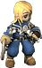

編年史1st 第5章～Spell～
主角角色的參數
| 職業 | LV | AC | MC | AAR | SAR | 習得技能 |
| 戰士 | 75 | 3 | 75 | 22 | 0 | 攻擊二輪新月斬烈焰斬王者之風秘劍之道戰吼破裂斬血之狂暴新月斬集中攻擊血之憤怒氣力動作Lv1、Lv2 |
| HP | MP | SP | 攻擊屬性 | 防禦屬性 | ||
| 917 | 698 | 578 | 風 | 風 | ||
| STR | DEX | CON | INT | WIS | ||
| 47 | 13 | 42 | 3 | 3 | ||
| DAM | MDAM | HIT | MHIT | WEIGHT | ||
| 13 | 0 | 25 | 0 | 107/313 |
小任務參加NPC
 卡琳 卡琳 | 習得技能 | 特徵 | 備註 |
| 戰士 |  攻擊 攻擊 | 對玩家攻擊的目標，或是攻擊自己的目標發動攻擊。 | HP0時自動復活 |
 艾雷克托莉亞 | 習得技能 | 特徵 | 備註 |
| 戰士 | 攻擊 | 對玩家攻擊的目標，或是攻擊自己的目標發動攻擊。 | HP0時自動復活 |
 肖恩 肖恩 | 習得技能 | 特徵 | 備註 |
| 戰士 | 攻擊 | 對玩家攻擊的目標，或是攻擊自己的目標發動攻擊。 | HP0時自動復活 |
任務所需時間大致標準
- 約30分鐘
- 給第2次以後嫌麻煩的人的時間備忘
以下時間僅供參考，請注意。
| 所需時間 | 任務內容 | 備註 |
| 約5分鐘 | 到1為止 | 無操作 |
| 約10分 | 任務1 | 拆除卡琳丟出的炸彈 |
| 約5分鐘 | 到2為止 | 無操作 |
| 約10分 | 任務2 | 消滅怪物 |
小任務詳情
1.拆除炸彈
| 限制時間 | 10分 |
| 成功條件 | 獲得2000分以上 |
| 失敗條件 | 未滿2000分且主角HP為0 |
| 得分 | 拆除炸彈(黑)+30分 拆除炸彈(紅)+60分 |
- 備註
點擊卡琳丟出的炸彈來拆除。拆除成功會加分。炸彈有黑色和紅色，黑炸彈有倒數3秒，紅炸彈（炸裂彈）沒有倒數，約1秒就會爆炸。在主角附近爆炸會減少約300HP。主角的HP不到1000。來不及在時間內拆除時，離炸彈遠一點，或站在炸彈的斜向位置，主角的HP就不會減少。超過2000分會顯示成功訊息。只要主角的HP沒變成0，就可以拆炸彈到時間限制結束。超過2000分的話，死了也算通關，所以不逃而故意死掉也行。一開始丟2個後會隔一段時間，漸漸地一次丟的數量會增加。黑炸彈會丟到畫面內的隨機位置，紅炸彈（炸裂彈）則會丟到主角站的位置。另外，丟紅炸彈（炸裂彈）時，喊的不是「拆除!」而是會變成「○○!（名字）拆除!」，所以仔細看訊息，在丟紅炸彈（炸裂彈）時斜向移動一步，就能順利處理應對。
2.斯歐米的大災難
| 限制時間 | 10分 |
| 成功條件 | 時間限制內主角的HP不能變成0 |
| 失敗條件 | 時間限制內主角HP0 |
| 得分 | 每5秒+30分 每隻怪物+30分 |
- 備註
任務參加NPC即使HP變成0也會自動復活。按F5會移動到與主角相同的座標。HP恢復藥可從怪物掉落舊的赫爾莉克夏，但沒有SP恢復藥，SP撐不住。所以讓NPC吸引仇恨，主角從背後用技能攻擊比較有效。即使如此連打技能SP也會很快用完，所以要思考輔助和技能的使用方式。氣力動作建議在這個任務使用。怪物強度是蓬亡靈＞森林精靈＞蓬澤基＞蓬。外觀和蓬一樣的蓬亡靈強得離譜，最好別去招惹。打錯就會當場變墓碑，要注意。順帶一提，所有怪物的HP都相當高。另外，怪物全都是非主動攻擊，所以如果不在意分數，放置10分鐘也能通關。
出現怪物
 波特 波特 | 備註 | 波恩傑奇 | 備註 |
| 掉落:舊的赫爾莉克夏 | 掉落:舊的赫爾莉克夏 | ||
 森林精靈 森林精靈 | 備註 | 蓬亡靈 | 備註 |
| 掉落:舊的赫爾莉克夏 | |||
| 外觀是蓬，但強到一擊就會被打成墓碑 |
獎賞
可依取得的點數獲得經驗值。
取得時的經驗值基礎值，取決於目前的等級。
另外，經驗值可以從一般經驗值・名聲經驗值・善惡經驗值・信仰經驗值四種中選擇。
詳細經驗值請參考以下頁面。
各等級的固定值表
留言
目前顯示最新的10件。請參閱留言頁面
- 先做好了架構。 -- 2011-02-11 (五) 16:54:46
- 做了各種編輯。 -- 2011-02-15 (二) 16:32:24
- 爆炸範圍像炸彈超人一樣是十字形。從斜向打的話，即使出現MISS也不會被爆風波及。 -- 2011-04-08 (五) 16:27:02
- 關於打倒怪物，推薦新月斬 -- 阿修羅 2011-07-19 (二) 05:52:16
- 這個分數拉不上去。炸彈好難啊 -- 2013-09-29 (日) 22:17:17
- &#